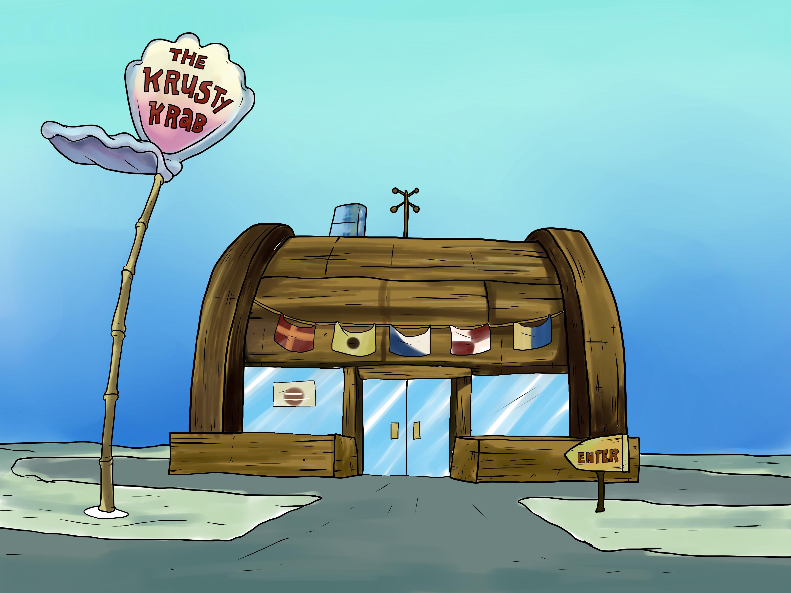

The Krusty Krab
Welcome to the Krusty Krab — Bikini Bottom’s most iconic dining establishment, serving mouthwatering Krabby Patties since 1999 (give or take a few ocean currents). Founded by the ever-enterprising Mr. Krabs, a former navy man with a passion for profits and patties, the Krusty Krab is where delicious food meets... questionable labor practices. Our secret? A recipe so closely guarded, it’s inspired decades of espionage from our "friendly" neighbor across the street. But no imitation can match the juicy, sizzling perfection of a Krabby Patty — grilled to excellence by our loyal fry cook, SpongeBob SquarePants, whose enthusiasm is only rivaled by the mustard dispenser. With rustic nautical décor, hand-wobbled tables, and a cash register operated by someone who definitely doesn’t want to be here, the Krusty Krab delivers fast food with character — and characters. Whether you're a local anchovy or just swimming through town, stop by for a meal that’s flipping good. Just don’t ask for the formula. Seriously. We’re still in court over that.